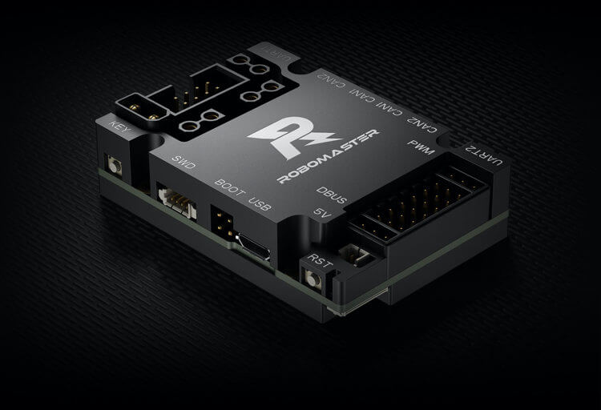

单片机初步认识
本节地图
认识单片机
MCU 定义与组成
CPU / Flash / RAM 分工
上电后的运行流程
外设全家桶
GPIO / Timer / PWM
UART / CAN / 中断 / DMA
各是什么、用在哪
CubeMX 实践
四步生成 Keil 工程
HAL 三个 GPIO 函数
LED 闪烁与按键防抖
本节产出
独立完成
「按键控制 LED」
小项目
C 板就是一台微型专用计算机
单片机（MCU，Microcontroller Unit）把 CPU、Flash、RAM 和外设集成到一颗芯片。它不运行桌面软件，只按固定周期、固定优先级执行机器人控制任务。
- CPU 执行指令；Flash 保存程序；RAM 保存运行变量。
- GPIO、Timer、CAN、UART 等外设直接连接真实硬件。
- RoboMaster C 板主控为 STM32F407IGHx，板载 CAN、IMU、用户按键和 RGB LED。

CPU · Flash · RAM 分工
| 部件 | 职责 | 特点 | 断电之后 |
|---|---|---|---|
| CPU | 执行指令、算术、判断 | 干活快，没有记忆 | 继续工作 |
| Flash | 存放程序（机器码） | 容量大、读写较慢 | 内容不丢 |
| RAM | 存放运行时数据（变量） | 容量小、读写飞快 | 全部清空 |
上电之后发生了什么
① 复位
CPU 从 Flash 固定地址
取出第一条指令
② 初始化
执行 CubeMX 生成的代码：
时钟 168 MHz → GPIO → 中断
③ 主循环
while(1) 反复执行
读按键、判断、翻转 LED
④ 中断插队
串口来数据 / 定时到点
打断 → 执行 ISR → 回原位
演示 · 芯片内部数据流动
外设总览：七个常客
| 外设 | 英文全称 | 一句话定义 | 机器人里用在哪 |
|---|---|---|---|
| GPIO | General Purpose I/O | 引脚可输出高/低电平或读取外界电平 | 点灯、按键、控制信号 |
| Timer | Timer | 硬件计数器，到点溢出并触发中断 | 控制周期、测速、产生 PWM |
| PWM | Pulse Width Modulation | 高频开关，用占空比调节平均功率 | 电机调速、呼吸灯 |
| UART | Universal Asynchronous Receiver/Transmitter | 两根线异步串行通信 | 调试打印、接上位机 |
| CAN | Controller Area Network | 双线差分总线，广播式多机通信 | 指挥 RM 电机 |
| 中断 | Interrupt | 事件触发硬件打断 CPU 执行 ISR | 遥控数据、按键响应 |
| DMA | Direct Memory Access | 硬件自动搬运批量数据，解放 CPU | 数据流搬运 |
GPIO：开关手脚
输出模式
- 推挽输出（Push-Pull）：主动输出 3.3V / 0V，CubeMX 默认
- 开漏输出（Open-Drain）：只能拉低，需外接上拉电阻
输入模式
- 上拉：内部接 3.3V，悬空读 1——适合按键接 GND
- 下拉：内部接 GND，悬空读 0
- 浮空：悬空读到随机值——初学者常见坑
输出：MCU ──3.3V / 0V──▶ LED（亮 / 灭） 输入：按键 ── 0 / 1 ──▶ MCU（读电平） 低电平点亮接法（灌电流）： 3.3V ──[电阻限流]──▶ LED ── PA5 PA5 = 0V 时两端有压差，灯亮
Timer 与 PWM
定时器（Timer）
硬件计数器，每来一个时钟脉冲计数值 +1，计满溢出，可自动重装。CPU 不用盯着，到点由中断「叫醒」。
溢出时间 = (PSC + 1) × (ARR + 1) ÷ 定时器时钟
脉冲宽度调制（PWM）
引脚高频开/关，占空比 = 高电平时间占比。外界感受到平均效果：占空比 50% ≈ 平均电压 1.65 V。
占空比 = CCR ÷ (ARR + 1) × 100% 20%：▊▁▁▁▁▊▁▁▁▁ 80%：▊▊▊▊▁▊▊▊▊▁
演示 · GPIO 点灯电路
演示 · PWM 占空比
UART 与 CAN：两种通信
UART（通用异步收发器）
两根线 TX / RX 交叉连接，双方约定波特率（如 115200）逐位传输，无共享时钟。用于调试打印、连接上位机。
CAN（控制器局域网）
CAN_H / CAN_L 差分双线，设备并联成总线，按报文 ID 广播收发，自带仲裁与校验，两端接 120 Ω 终端电阻。RM 电机全部走 CAN。
| 对比 | UART | CAN |
|---|---|---|
| 拓扑 | 一对一（对讲机） | 多设备总线（车间广播） |
| 抗干扰 | 一般，适合短距离低速 | 差分信号，抗干扰强 |
| 典型用途 | 调试打印 | 电机指令与反馈 |
中断与 DMA
中断（Interrupt）
事件（引脚变化、定时到点、串口收数）发生时，硬件打断 CPU 当前工作，跳去执行中断服务函数（ISR），处理完回到原位。
- 流程：保存现场 → 执行 ISR → 恢复现场 → 回到原位
- 不同中断有优先级，数值越小越优先
- 轮询 = 反复去门口看；中断 = 敲门才叫
DMA（直接存储器访问）
独立于 CPU 的硬件搬运通道：说好源地址、目的地址、长度，自动搬运批量数据，搬完可触发中断通知 CPU。
- 方向：外设 ↔ 内存
- 典型：遥控器串口连续接收、传感器批量采样
- CPU 搬运 = 员工亲搬；DMA = 自动传送带
演示 · 轮询 vs 中断
CubeMX 四步生成工程
① 选芯片
Part Number 搜型号
双击选中，注意封装后缀
示例：STM32F407IG
② 配引脚
PA5 → GPIO_Output
PA0 → GPIO_Input（上拉）
起 User Label：LED / KEY
③ 配时钟
HSE 晶振看原理图
（常见 8 / 25 MHz）
PLL → SYSCLK 168 MHz
④ 生成工程
Toolchain 选 MDK-ARM V5
路径全英文
GENERATE CODE
HAL GPIO 三件套
HAL_GPIO_WritePin(LED_GPIO_Port, LED_Pin, GPIO_PIN_SET); /* 写电平：高 3.3V / 低 0V */ HAL_GPIO_TogglePin(LED_GPIO_Port, LED_Pin); /* 翻转电平：亮 ↔ 灭 */ if (HAL_GPIO_ReadPin(KEY_GPIO_Port, KEY_Pin) == GPIO_PIN_RESET) { /* 读电平：按键按下（低电平有效） */ }
LED 闪烁：翻转 + 等待
while (1) { HAL_GPIO_TogglePin(LED_GPIO_Port, LED_Pin); /* 电平翻转：亮 ↔ 灭 */ HAL_Delay(500); /* 等 500 ms：1 Hz 闪烁 */ }
按键防抖：先确认稳定，再产生一次事件
机械触点会在几毫秒内反复通断。主循环如果直接把“电平为低”当成一次按键，就会在按住期间连续触发。
/* 伪代码：非阻塞消抖 */ raw = ReadKey(); if (raw != candidate) { candidate = raw; changed_at = now; } if (now - changed_at >= 20 && stable != candidate) { stable = candidate; if (stable == PRESSED) key_event = 1; }
C 板实物对应
| 功能 | 引脚 | 有效电平 |
|---|---|---|
| 用户按键 | PA0 | 按下为低 |
| 蓝/绿/红 LED | PH10/11/12 | 高电平点亮 |
选做 · PWM 呼吸灯
HAL_TIM_PWM_Start(&htim2, TIM_CHANNEL_1); /* 启动 PWM */ int b; while (1) { for (b = 0; b <= 999; b++) { /* 渐亮 */ __HAL_TIM_SET_COMPARE(&htim2, TIM_CHANNEL_1, b); HAL_Delay(1); } for (b = 999; b >= 0; b--) { /* 渐暗 */ __HAL_TIM_SET_COMPARE(&htim2, TIM_CHANNEL_1, b); HAL_Delay(1); } }
CubeMX 配置
- PA5 改选 TIM2_CH1
- Channel1 → PWM Generation CH1
- PSC = 83，ARR = 999
- 频率 = 定时器时钟 ÷ (83+1) ÷ (999+1) ≈ 1 kHz
常见问题与排查
| 现象 | 可能原因 | 排查方法 |
|---|---|---|
| LED_Pin undefined | 引脚没配 / 没起 User Label | 回 CubeMX 检查，重新生成 |
| 灯怎么都不亮 | 接错引脚；低电平点亮却写 SET | 查原理图；万用表量电平 |
| 按一下灯跳好几下 | 没做防抖 | 边沿检测 + 20 ms 延时 |
| 不按键电平乱变 | 输入配成浮空 | 改内部上拉 / 下拉 |
| No target connected | ST-Link 接线 / 驱动问题 | 检查 SWDIO / SWCLK |
| 行为全乱、延时不对 | 晶振频率填错 | 核对原理图重配时钟 |
| 工程打开是空的 | Toolchain 没选 MDK-ARM V5 | Project Manager 改选 |
| 路径报错 | 含中文或空格 | 移到全英文路径 |
名词速查表
| 缩写 | 全称 | 一句话 |
|---|---|---|
| MCU | Microcontroller Unit | 集成 CPU/存储/外设的单片机 |
| GPIO | General Purpose Input/Output | 通用输入输出引脚 |
| PWM | Pulse Width Modulation | 用占空比调节平均功率 |
| UART | Universal Asynchronous Receiver/Transmitter | 异步串口，调试打印 |
| CAN | Controller Area Network | 总线通信，指挥电机 |
| DMA | Direct Memory Access | 硬件自动搬运数据 |
| ISR | Interrupt Service Routine | 中断服务函数 |
| HAL | Hardware Abstraction Layer | ST 官方硬件抽象库 |
补充内容与延伸资源
- STM32F4 系列官方产品页 —— 选型与数据手册入口
- STM32CubeMX 官方页面 —— 工具说明与最新版下载
- 野火《STM32 HAL 库开发实战指南》视频 —— B 站 151 万播放，当字典查
- RoboMaster 开发板 C 型官方页面 —— 官方开发板介绍（主控同为 F407）
- 官方 GitHub 示例仓库 —— 点灯到整车的渐进示例与教程 PDF